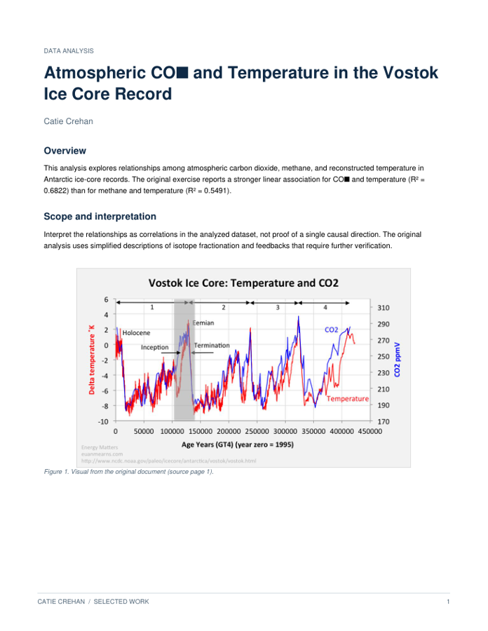
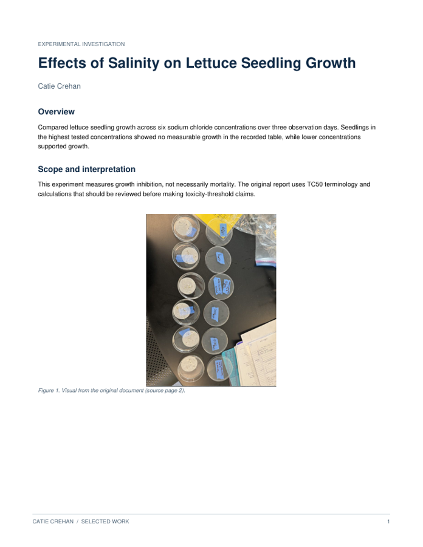
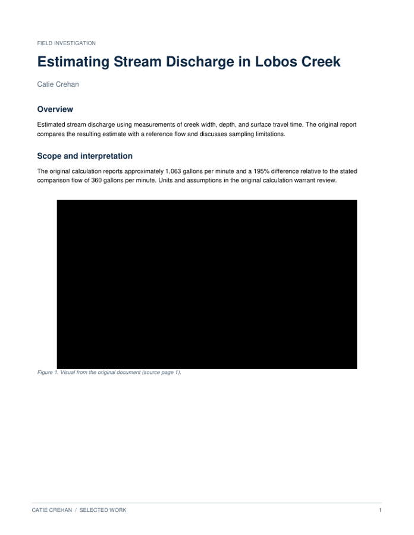
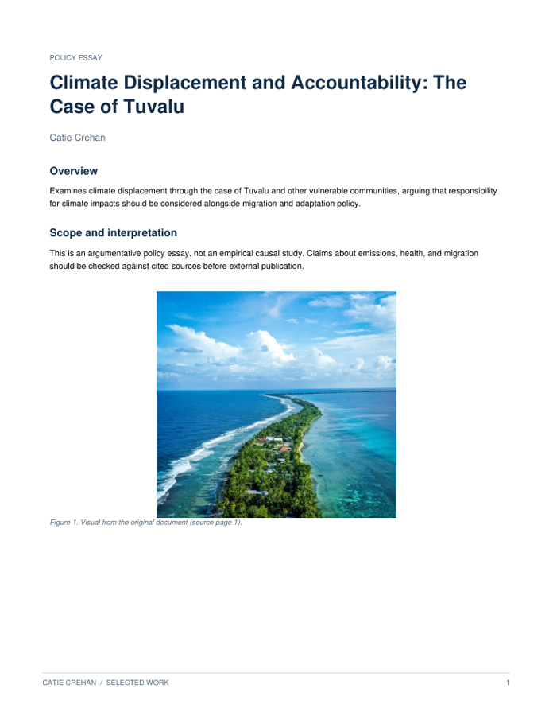
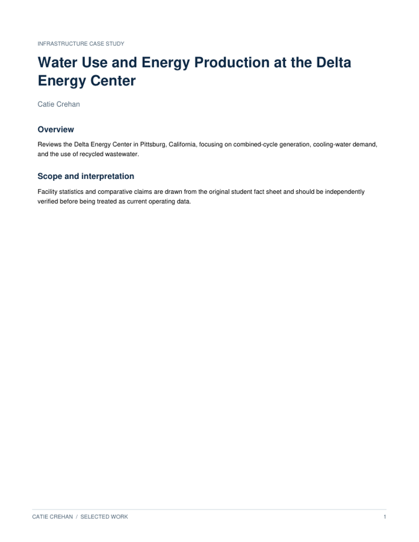
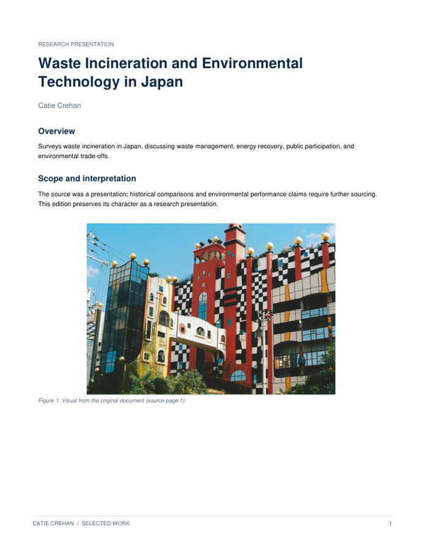
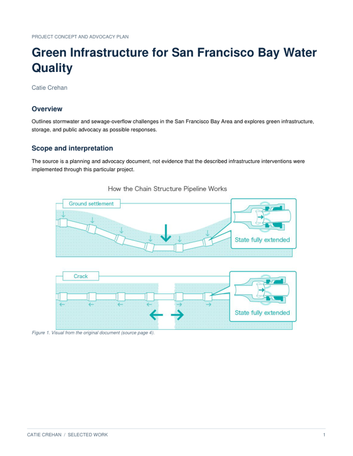
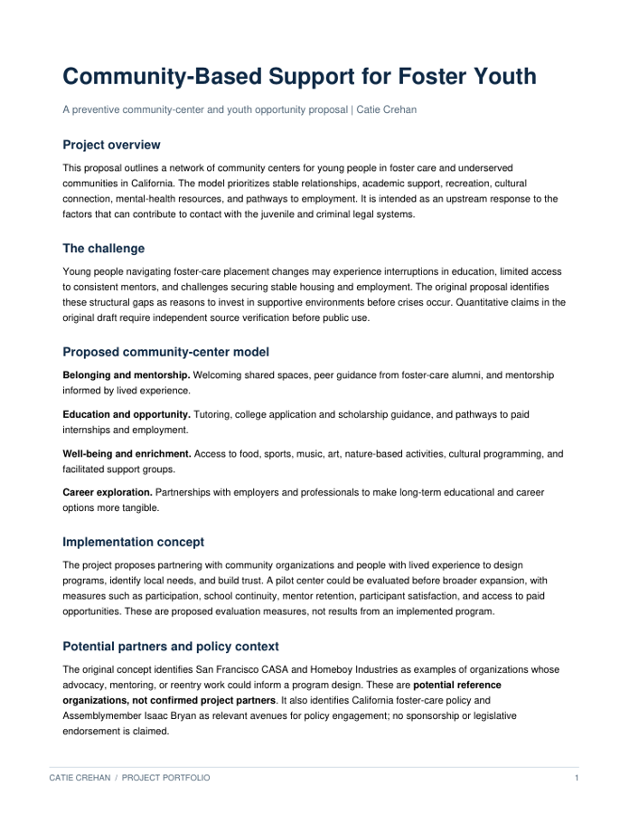

About me
I'm a student at the University of California, Berkeley interested in how engineering, ocean science, and emerging technologies can help us better understand and protect marine environments.
My work and interests span environmental fieldwork, climate science, renewable energy, and the intersection of technology and public policy. This website brings together selected coursework, independent writing, and projects.
Research
Selected experiments, data analyses, and research-based writing.

Atmospheric CO₂ and Paleoclimate Dynamics
Analyzed Antarctic ice-core data to examine relationships among atmospheric CO₂, methane, and historical temperature. Compared correlations and considered feedbacks between the oceans and atmosphere.
Read project overview & redesigned document →
Wind Turbine Blade Configuration and Efficiency
Investigated how the number of blades on a small-scale wind turbine affects electrical output. Compared blade configurations using wind-speed, voltage, and current measurements.
Read project overview & redesigned document →
The Effects of Soil Salinity on Agricultural Plant Growth
Investigated how increasing salt concentrations affect early plant growth, using lettuce seedlings as an experimental model for salinity stress relevant to agriculture.
Read project overview & redesigned document →
Streamflow Measurement at Lobos Creek
Estimated stream discharge from channel measurements and surface-flow timing, then examined sources of error in the field method.
Read project overview & redesigned document →
Climate Displacement and Accountability: Tuvalu
Examined climate displacement, the vulnerability of island communities, and arguments for corporate responsibility and climate justice.
Read project overview & redesigned document →
Energy Infrastructure and Water Use in California
Researched the Delta Energy Center’s electricity generation, cooling-water demands, and use of recycled wastewater in California’s water-constrained energy system.
Read project overview & redesigned document →
Waste Incineration and Environmental Policy in Japan
Explored municipal waste incineration, associated environmental tradeoffs, and the role of waste-management infrastructure in Japan.
Read project overview & redesigned document →Projects
Applied work, proposals, and initiatives.

Building Stormwater Infiltration Basins to Improve Water Quality in San Francisco
Designed and built stormwater infiltration basins in San Francisco to help manage runoff and improve water quality. Related project research examined sewage overflows and green infrastructure solutions in the Bay Area.
Read project overview & redesigned document →
Community-Based Support for Foster Youth
Developed a proposal for community centers offering mentorship, tutoring, career pathways, and supportive services to help reduce foster-youth involvement in the criminal legal system.
Read project overview & redesigned document →Experience & involvement
Berkeley Underwater Robotics
Head of Outreach and member of the Mechanical Team.
Green infrastructure
Hands-on involvement in stormwater infiltration systems in the San Francisco Bay Area.
Education
University of California, Berkeley
Pursuing a B.A. in Marine Science and a B.S. in Mechanical Engineering.